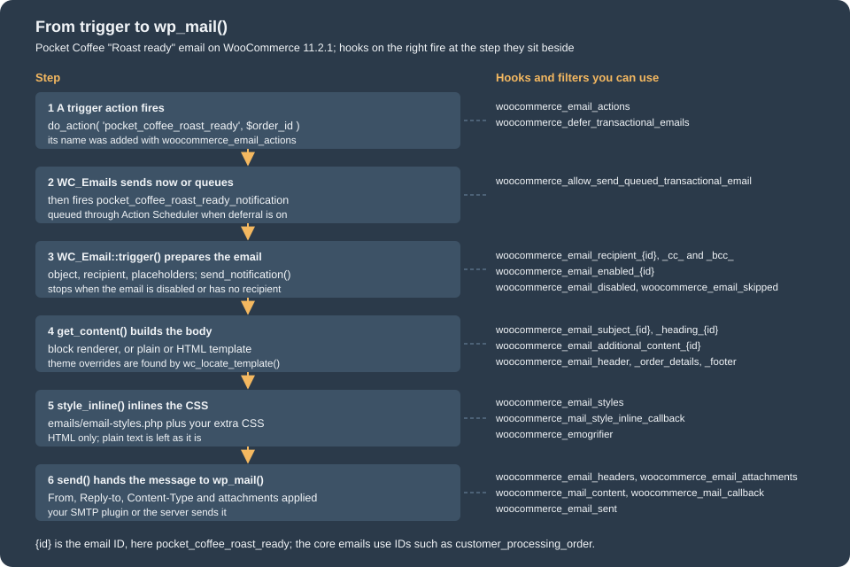
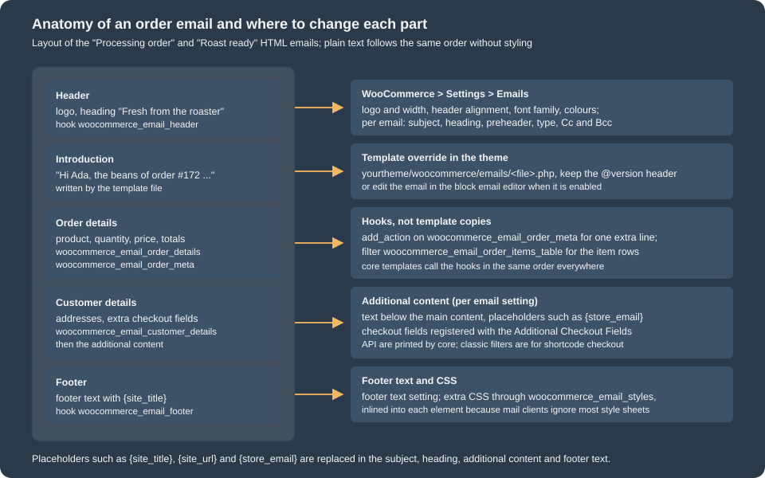

Emails
|
This content was generated with the assistance of AI and should be verified against the official documentation before being relied on in production. |
Every WooCommerce store sends mail: an order confirmation to the customer, a "new order" notice to the shop manager, a password reset link, a note
from the merchant. These transactional emails are objects of one class family (WC_Email), configured on one settings screen, rendered from template
files that a theme can override, and delivered through the plain WordPress wp_mail(). This page explains that machinery on the version
baseline WordPress 7.1.3 and WooCommerce 11.2.1 (the 11.2 series was released on 2026-10-07 and 11.2.1 on 2026-10-09), checked on 2026-10-27: the core emails and their
settings, the WC_Email class, how an email is triggered, templates and overrides, hooks, CSS, previews, and the two newer layers on top of the classic system, the
email improvements design (a feature flag that is on by default for new stores) and the block email editor (an alpha feature behind its own flag). It applies to every
self-hosted WooCommerce store; emails of WooCommerce.com services and of extensions you install follow the same rules when they are built on WC_Email.
The running example is Pocket Coffee. A small plugin, pocket-coffee-emails, adds a "Roast ready" email that tells the customer when the beans of an order
have been roasted. It registers the email class, provides HTML, plain text and block templates, hooks into the transactional pipeline, adds brand CSS, writes a log line for every email,
gives the preview a roast date and opts in to the block email editor with a custom personalization tag. The plugin was installed, activated and exercised on a
local WooCommerce 11.2.1 store, and the outputs shown are the ones observed. The store has no mail server, so mail delivery itself could not be tested: the examples capture the message
with the pre_wp_mail filter, which is what a mail catcher would show, and say so wherever it matters. Related pages: the hook system in
Hooks: Actions and Filters, theme overrides in Themes: Block and Classic,
queued sending in Action Scheduler, and the order data in CRUD Objects and Data Stores.
The core emails
WC_Emails (the singleton behind WC()->mailer()) creates one object per email class in init() and then lets plugins add or remove entries
through the filter woocommerce_email_classes. On the test store WC()->mailer()->get_emails() returned these objects (the order is the registration order; the group is the section of
WooCommerce > Settings > Emails the email is listed under):
| Email ID | Class | Group | On | Sent to and when |
|---|---|---|---|---|
|
|
orders |
yes |
The shop manager, when a new order reaches processing, completed or on-hold. |
|
|
orders |
yes |
The shop manager, when a processing, on-hold or pending order is cancelled. |
|
|
orders |
yes |
The shop manager, when a pending or on-hold order fails. |
|
|
order-changes |
no |
The customer, when a processing or on-hold order is cancelled. |
|
|
order-changes |
yes |
The customer, when the order failed. |
|
|
order-changes |
yes |
The customer, when the order is placed on hold (bank transfer, cheque). |
|
|
order-updates |
yes |
The customer, once payment is received and the order is processing. |
|
|
order-updates |
yes |
The customer, when the order is completed. |
|
|
order-changes |
yes |
The customer, on a full or partial refund. |
|
|
payments |
manual |
Sent by hand from the order screen ("Email invoice / order details to customer"). |
|
|
order-changes |
yes |
The customer, when the merchant adds a customer note to an order. |
|
|
accounts |
yes |
The customer, with the password reset link. |
|
|
accounts |
yes |
The customer, after registering. |
|
|
accounts |
yes |
The customer, with the one-time link that links earlier guest orders to the account. |
|
|
payments |
yes |
The shop manager, when a payment gateway is switched on. |
|
|
payments |
manual |
Receipts for Point of Sale orders. |
Feature-gated emails are added to the list when their feature is on: the three customer_fulfillment_* emails (feature fulfillments), customer_review_request
(feature customer_review_request), and the two order withdrawal emails (feature order_withdrawal); with the block email editor on, customer_partially_refunded_order is added too.
The stock notifications (low stock, out of stock, backorder) are not WC_Email objects: WC_Emails sends them directly to the address in the "Stock notification recipient" setting,
and the filters woocommerce_email_recipient_low_stock, woocommerce_email_subject_low_stock, woocommerce_email_content_low_stock and their no_stock and backorder twins
adjust them. The email groups are accounts, orders, order-updates, order-changes and payments; the older slugs order-processing and order-exceptions are deprecated
aliases, and woocommerce_email_groups lets an extension add a group.
Source: WooCommerce developer documentation: Email editor integration and WooCommerce code reference: WC_Email
Version history
| Version | Change that matters to email code |
|---|---|
3.2.0 |
|
9.8.0 |
The "email improvements" design is enabled by default for newly installed shops ( |
10.3.0 |
Email groups and the |
10.5.0 |
|
10.9.0 |
|
11.1.0 |
A |
11.2.0 |
|
Source: WooCommerce 11.2.0 release notes
Settings
Two kinds of settings exist, both in WooCommerce > Settings > Emails.
Store-wide options (stored as individual options, filtered by woocommerce_email_settings):
| Option | Default | Meaning |
|---|---|---|
|
the site name |
The "From" name of every email. |
|
the admin email |
The "From" address. Use an address on your own domain, with SPF and DKIM set up, or mail clients may reject or hide the messages. |
|
no, empty, empty |
A custom Reply-to for customer emails. Without it WooCommerce sets Reply-to to the From name and address (observed below). For the three admin order notices Reply-to is always the customer’s billing name and email. |
|
none, 120, left |
The logo, its width in pixels and the header alignment. |
|
Helvetica |
The font family used in the stylesheet. |
|
|
The footer, with placeholders. |
|
|
Accent, email background, content background, text and secondary text colours. |
|
|
Lets WooCommerce take the colours and font from the active theme’s styles when the improved design is on. |
Per-email settings live in one option per email, named woocommerce_<id>_settings, a serialised array. They are the form fields that WC_Email::init_form_fields() defines:
| Field | Meaning |
|---|---|
|
Checkbox; |
|
Text with placeholders; empty means that the defaults of |
|
Text shown below the main content (textarea); the default comes from |
|
|
|
Comma-separated recipients; only with the email improvements feature on, and not for emails with |
|
Preview text next to the subject in the inbox, maximum 150 characters; only with the block email editor feature on. |
(new emails only) |
The admin notices add a "Recipient(s)" field that defaults to the admin email. |
The placeholders for subject, heading, additional content and footer are replaced by format_string(). Every email has {site_title}, {site_address}, {site_url} and {store_email};
each class adds its own ({order_date} and {order_number} for order emails; the Pocket Coffee email adds {roast_date}). A placeholder that is not defined is left as typed.
The WC_Email class
A custom email extends WC_Email, which itself extends WC_Settings_API (that is where init_settings(), get_option() and the admin form rendering come from). These are the
properties a subclass sets in its constructor, before calling parent::__construct():
| Property | Meaning |
|---|---|
|
Unique ID; also the suffix of every per-email filter and of the settings option. |
|
Name and help text on the Emails screen. |
|
|
|
One of the group slugs above. |
|
Template names relative to |
|
Directory that holds the templates. Defaults to the WooCommerce |
|
The template that produces the main content that replaces the block editor placeholder. Default |
|
Array of |
|
Recipients. |
|
The thing the email is about (an order, a user, a product). Filters receive it. |
|
Protected; |
|
Protected, since 11.2.0; |
And the methods that matter:
| Method | Purpose |
|---|---|
|
Not defined by the base class: your method, called by the notification action. It prepares |
|
Since 10.9.0, protected. Sends only when the email is enabled and has a recipient, and fires |
|
Since 10.9.0, protected. Like the above without the enabled check, for emails that are always sent on request (invoice, receipts). |
|
Public. Inlines the CSS, calls |
|
Settings or defaults, with placeholders replaced and the per-email filters applied. |
|
Validated recipient lists, after |
|
Content-Type, Reply-to, and Cc and Bcc; passed through |
|
An empty array passed through |
|
The body: from the block renderer when it applies, otherwise |
|
Return the rendered template; the base class returns an empty string. |
|
Override these (not the |
|
Switch to the customer’s locale for customer emails and back; every |
|
Applies the email stylesheet to the HTML. |
A complete custom email: Roast ready
The Pocket Coffee plugin adds one email. This is the main file: it declares compatibility with High-Performance Order Storage and the Cart and Checkout blocks, registers the class, adds its trigger to the list of transactional actions, and customises three other things (the subject of the processing email for Coffee Club members, the stylesheet, and a log line).
<?php
/**
* Plugin Name: Pocket Coffee Emails
* Description: Adds the "Roast ready" transactional email and a few email customisations.
* Version: 0.1.0
* Requires at least: 7.0
* Requires PHP: 7.4
* Requires Plugins: woocommerce
* WC requires at least: 11.2
* WC tested up to: 11.2
* Text Domain: pocket-coffee-emails
* License: GPL-2.0-or-later
*
* @package PocketCoffeeEmails
*/
defined( 'ABSPATH' ) || exit;
define( 'POCKET_COFFEE_EMAILS_DIR', plugin_dir_path( __FILE__ ) );
// Declare compatibility with High-Performance Order Storage and the Cart and Checkout blocks.
add_action(
'before_woocommerce_init',
static function () {
if ( class_exists( \Automattic\WooCommerce\Utilities\FeaturesUtil::class ) ) {
\Automattic\WooCommerce\Utilities\FeaturesUtil::declare_compatibility( 'custom_order_tables', __FILE__, true );
\Automattic\WooCommerce\Utilities\FeaturesUtil::declare_compatibility( 'cart_checkout_blocks', __FILE__, true );
}
}
);
/**
* Register the email class. WC_Email exists only once WooCommerce has loaded,
* so the class file is required inside the filter, not at plugin load time.
*
* @param array $emails Email objects, keyed by class name.
* @return array
*/
function pocket_coffee_emails_register( $emails ) {
require_once POCKET_COFFEE_EMAILS_DIR . 'includes/class-pocket-coffee-email-roast-ready.php';
$emails['Pocket_Coffee_Email_Roast_Ready'] = new Pocket_Coffee_Email_Roast_Ready();
return $emails;
}
add_filter( 'woocommerce_email_classes', 'pocket_coffee_emails_register' );
/**
* Let WC_Emails run (or defer) our custom trigger like it does for core triggers:
* the email class then listens to pocket_coffee_roast_ready_notification.
*
* @param string[] $actions Action names that trigger transactional emails.
* @return string[]
*/
function pocket_coffee_emails_actions( $actions ) {
$actions[] = 'pocket_coffee_roast_ready';
return $actions;
}
add_filter( 'woocommerce_email_actions', 'pocket_coffee_emails_actions' );
/**
* Brand the "Processing order" subject for Coffee Club members.
*
* @param string $subject Formatted subject.
* @param WC_Order|bool $order Order the email is about.
* @return string
*/
function pocket_coffee_emails_club_subject( $subject, $order ) {
if ( $order instanceof WC_Order && $order->get_customer_id() && get_user_meta( $order->get_customer_id(), 'pocket_coffee_club', true ) ) {
return '[Coffee Club] ' . $subject;
}
return $subject;
}
add_filter( 'woocommerce_email_subject_customer_processing_order', 'pocket_coffee_emails_club_subject', 10, 2 );
/**
* Append brand CSS to the stylesheet that is inlined into every HTML email.
*
* @param string $css Email CSS.
* @return string
*/
function pocket_coffee_emails_styles( $css ) {
return $css . '
.pocket-coffee-roast { background-color: #f3e3cf; border-radius: 4px; padding: 12px 16px; }
';
}
add_filter( 'woocommerce_email_styles', 'pocket_coffee_emails_styles' );
/**
* Write one log line for every email WooCommerce sends or fails to send.
*
* @param bool $success Whether wp_mail() accepted the message.
* @param string $id Email ID.
* @param WC_Email $email Email object.
*/
function pocket_coffee_emails_log( $success, $id, $email ) {
$order_number = $email->object instanceof WC_Order ? $email->object->get_order_number() : '-';
wc_get_logger()->info(
sprintf( 'Email %s for order %s: %s', $id, $order_number, $success ? 'sent' : 'failed' ),
array( 'source' => 'pocket-coffee-emails' )
);
}
add_action( 'woocommerce_email_sent', 'pocket_coffee_emails_log', 10, 3 );
/**
* Give the preview's dummy order a roast date, so the "Roast ready" preview is not empty.
*
* @param WC_Email $email Email object about to be previewed.
* @return WC_Email
*/
function pocket_coffee_emails_prepare_preview( $email ) {
if ( $email instanceof Pocket_Coffee_Email_Roast_Ready && $email->object instanceof WC_Order ) {
$email->object->update_meta_data( '_pocket_coffee_roast_date', '2026-10-26' );
}
return $email;
}
add_filter( 'woocommerce_prepare_email_for_preview', 'pocket_coffee_emails_prepare_preview' );
/**
* Opt the email in to the block email editor (only used when that feature is on).
*
* @param string[] $emails IDs of the emails that use the block email editor.
* @return string[]
*/
function pocket_coffee_emails_block_editor( $emails ) {
$emails[] = 'pocket_coffee_roast_ready';
return $emails;
}
add_filter( 'woocommerce_transactional_emails_for_block_editor', 'pocket_coffee_emails_block_editor' );
/**
* Register the pocket-coffee/roast-date personalization tag.
*
* @param \Automattic\WooCommerce\EmailEditor\Engine\PersonalizationTags\Personalization_Tags_Registry $registry Tag registry.
* @return \Automattic\WooCommerce\EmailEditor\Engine\PersonalizationTags\Personalization_Tags_Registry
*/
function pocket_coffee_emails_tags( $registry ) {
$registry->register(
new \Automattic\WooCommerce\EmailEditor\Engine\PersonalizationTags\Personalization_Tag(
__( 'Roast date', 'pocket-coffee-emails' ),
'pocket-coffee/roast-date',
__( 'Pocket Coffee', 'pocket-coffee-emails' ),
static function ( $context ) {
$order = isset( $context['order'] ) ? $context['order'] : null;
return $order instanceof WC_Order ? (string) $order->get_meta( '_pocket_coffee_roast_date' ) : '';
},
array(),
null,
array( 'woo_email' )
)
);
return $registry;
}
add_filter( 'woocommerce_email_editor_register_personalization_tags', 'pocket_coffee_emails_tags' );Three points about the registration. The class file is required inside the woocommerce_email_classes callback because WC_Email does not exist when the plugin file is loaded. The email is
appended to the array keyed by its class name, and the object is created there, which runs the constructor and with it the settings and the hooks. And the trigger is declared by
adding pocket_coffee_roast_ready to woocommerce_email_actions: for every name on that list WC_Emails hooks its own handler, so that when the plugin later fires
do_action( 'pocket_coffee_roast_ready', $order_id ) the handler creates the mailer and fires pocket_coffee_roast_ready_notification with the same arguments, which the email class listens to.
That indirection is what lets WooCommerce defer the sending to a background job (see below).
Now the class.
<?php
/**
* "Roast ready" customer email.
*
* @package PocketCoffeeEmails
*/
defined( 'ABSPATH' ) || exit;
if ( ! class_exists( 'Pocket_Coffee_Email_Roast_Ready', false ) ) :
/**
* Tells the customer that the beans of an order have been roasted.
*/
class Pocket_Coffee_Email_Roast_Ready extends WC_Email {
/**
* Set the email ID, the templates and the trigger.
*/
public function __construct() {
$this->id = 'pocket_coffee_roast_ready';
$this->customer_email = true;
$this->title = __( 'Roast ready', 'pocket-coffee-emails' );
$this->description = __( 'Sent to the customer when the beans of an order have been roasted.', 'pocket-coffee-emails' );
$this->email_group = 'order-updates';
$this->template_html = 'emails/pocket-coffee-roast-ready.php';
$this->template_plain = 'emails/plain/pocket-coffee-roast-ready.php';
$this->template_block = 'emails/block/pocket-coffee-roast-ready.php';
$this->template_base = POCKET_COFFEE_EMAILS_DIR . 'templates/';
$this->placeholders = array(
'{order_date}' => '',
'{order_number}' => '',
'{roast_date}' => '',
);
// Triggered through the pocket_coffee_roast_ready action (see woocommerce_email_actions).
add_action( 'pocket_coffee_roast_ready_notification', array( $this, 'trigger' ), 10, 2 );
// The parent constructor loads the saved settings, so it comes last.
parent::__construct();
}
/**
* Default subject, translatable at run time.
*
* @return string
*/
public function get_default_subject() {
return __( 'Your {site_title} beans are roasted', 'pocket-coffee-emails' );
}
/**
* Default heading.
*
* @return string
*/
public function get_default_heading() {
return __( 'Fresh from the roaster', 'pocket-coffee-emails' );
}
/**
* Default text shown below the main content.
*
* @return string
*/
public function get_default_additional_content() {
return __( 'Questions about brewing? Reply to this email or write to {store_email}.', 'pocket-coffee-emails' );
}
/**
* Send the email for one order.
*
* @param int $order_id Order ID.
* @param WC_Order|bool $order Order object, if the caller already has it.
*/
public function trigger( $order_id, $order = false ) {
$this->setup_locale();
if ( $order_id && ! is_a( $order, 'WC_Order' ) ) {
$order = wc_get_order( $order_id );
}
if ( is_a( $order, 'WC_Order' ) ) {
$this->object = $order;
$this->recipient = $order->get_billing_email();
$this->placeholders['{order_date}'] = wc_format_datetime( $order->get_date_created() );
$this->placeholders['{order_number}'] = $order->get_order_number();
$this->placeholders['{roast_date}'] = (string) $order->get_meta( '_pocket_coffee_roast_date' );
}
$this->send_notification();
$this->restore_locale();
}
/**
* HTML body.
*
* @return string
*/
public function get_content_html() {
return wc_get_template_html(
$this->template_html,
array(
'order' => $this->object,
'email_heading' => $this->get_heading(),
'additional_content' => $this->get_additional_content(),
'sent_to_admin' => false,
'plain_text' => false,
'email' => $this,
),
'',
$this->template_base
);
}
/**
* Plain text body.
*
* @return string
*/
public function get_content_plain() {
return wc_get_template_html(
$this->template_plain,
array(
'order' => $this->object,
'email_heading' => $this->get_heading(),
'additional_content' => $this->get_additional_content(),
'sent_to_admin' => false,
'plain_text' => true,
'email' => $this,
),
'',
$this->template_base
);
}
}
endif;Notes on the class. The constructor sets the properties and hooks the trigger before parent::__construct(), because the parent loads the settings and the form fields, which use the placeholders and
$template_base. trigger() accepts the order object as an optional second argument: when WooCommerce fires a status transition it passes both the order ID and the order, and
fetching it again would cost a query. It calls setup_locale() first and restore_locale() last, around the work that produces translated text. get_content_html() and get_content_plain()
pass $this->template_base as the fourth argument of wc_get_template_html(), so the template is first looked up in the theme (see the overrides section) and then in the plugin, not in WooCommerce core.
The HTML template builds the message from the shared hooks, so the header, the order summary, the addresses and the footer are those of every other WooCommerce email:
<?php
/**
* "Roast ready" email (HTML).
*
* This template can be overridden by copying it to yourtheme/woocommerce/emails/pocket-coffee-roast-ready.php.
*
* @package PocketCoffeeEmails\Templates
* @version 0.1.0
*/
defined( 'ABSPATH' ) || exit;
/**
* Email header.
*
* @hooked WC_Emails::email_header() Output the email header.
* @since 0.1.0
*/
do_action( 'woocommerce_email_header', $email_heading, $email );
?>
<p>
<?php
/* translators: %s: customer first name */
printf( esc_html__( 'Hi %s,', 'pocket-coffee-emails' ), esc_html( $order->get_billing_first_name() ) );
?>
</p>
<p class="pocket-coffee-roast">
<?php
printf(
/* translators: 1: order number, 2: roast date */
esc_html__( 'The beans of order #%1$s were roasted on %2$s and are on their way to the packing table.', 'pocket-coffee-emails' ),
esc_html( $order->get_order_number() ),
esc_html( $order->get_meta( '_pocket_coffee_roast_date' ) )
);
?>
</p>
<?php
/**
* Order details table.
*
* @hooked WC_Emails::order_details() Shows the order details table.
* @since 0.1.0
*/
do_action( 'woocommerce_email_order_details', $order, $sent_to_admin, $plain_text, $email );
/**
* Order meta data.
*
* @hooked WC_Emails::order_meta() Shows order meta data.
* @since 0.1.0
*/
do_action( 'woocommerce_email_order_meta', $order, $sent_to_admin, $plain_text, $email );
/**
* Customer details.
*
* @hooked WC_Emails::customer_details() Shows customer details.
* @hooked WC_Emails::email_address() Shows email address.
* @since 0.1.0
*/
do_action( 'woocommerce_email_customer_details', $order, $sent_to_admin, $plain_text, $email );
if ( $additional_content ) {
echo wp_kses_post( wpautop( wptexturize( $additional_content ) ) );
}
/**
* Email footer.
*
* @hooked WC_Emails::email_footer() Output the email footer.
* @since 0.1.0
*/
do_action( 'woocommerce_email_footer', $email );Source: WooCommerce developer documentation: Template structure and overriding templates via a theme
The plain text template does the same without markup:
<?php
/**
* "Roast ready" email (plain text).
*
* This template can be overridden by copying it to yourtheme/woocommerce/emails/plain/pocket-coffee-roast-ready.php.
*
* @package PocketCoffeeEmails\Templates\Plain
* @version 0.1.0
*/
defined( 'ABSPATH' ) || exit;
echo "=-=-=-=-=-=-=-=-=-=-=-=-=-=-=-=-=-=-=-=-=\n";
echo esc_html( wp_strip_all_tags( $email_heading ) );
echo "\n=-=-=-=-=-=-=-=-=-=-=-=-=-=-=-=-=-=-=-=-=\n\n";
/* translators: %s: customer first name */
echo sprintf( esc_html__( 'Hi %s,', 'pocket-coffee-emails' ), esc_html( $order->get_billing_first_name() ) ) . "\n\n";
echo sprintf(
/* translators: 1: order number, 2: roast date */
esc_html__( 'The beans of order #%1$s were roasted on %2$s and are on their way to the packing table.', 'pocket-coffee-emails' ),
esc_html( $order->get_order_number() ),
esc_html( $order->get_meta( '_pocket_coffee_roast_date' ) )
) . "\n\n";
/**
* Order details table.
*
* @hooked WC_Emails::order_details() Shows the order details table.
* @since 0.1.0
*/
do_action( 'woocommerce_email_order_details', $order, $sent_to_admin, $plain_text, $email );
echo "\n----------------------------------------\n\n";
/**
* Order meta data.
*
* @hooked WC_Emails::order_meta() Shows order meta data.
* @since 0.1.0
*/
do_action( 'woocommerce_email_order_meta', $order, $sent_to_admin, $plain_text, $email );
/**
* Customer details.
*
* @hooked WC_Emails::customer_details() Shows customer details.
* @hooked WC_Emails::email_address() Shows email address.
* @since 0.1.0
*/
do_action( 'woocommerce_email_customer_details', $order, $sent_to_admin, $plain_text, $email );
echo "\n\n----------------------------------------\n\n";
if ( $additional_content ) {
echo esc_html( wp_strip_all_tags( wptexturize( $additional_content ) ) );
echo "\n\n----------------------------------------\n\n";
}
/**
* Footer text, as saved in WooCommerce > Settings > Emails.
*
* @since 0.1.0
*/
$footer_text = apply_filters( 'woocommerce_email_footer_text', get_option( 'woocommerce_email_footer_text' ) );
echo wp_kses_post( $footer_text );Source: WooCommerce developer documentation: Template structure and overriding templates via a theme
Sending it
The email was triggered for a processing order created with wc_create_order() (order 172, two "Pocket Mug" lines, billing email ada@example.test, meta _pocket_coffee_roast_date set). The mail
function of the container cannot connect to a mail server, so the script captures the message in the pre_wp_mail filter, which short-circuits wp_mail() and receives its arguments.
$order = wc_create_order( array( 'status' => 'processing' ) );
$order->add_product( wc_get_product( 11 ), 2 );
$order->set_billing_first_name( 'Ada' );
$order->set_billing_last_name( 'Lovelace' );
$order->set_billing_email( 'ada@example.test' );
$order->set_billing_country( 'ES' );
$order->update_meta_data( '_pocket_coffee_roast_date', '2026-10-26' );
$order->calculate_totals();
$order->save();
echo 'order ', $order->get_id(), "\n";
// Capture instead of delivering: no mail server is available in the container.
$captured = array();
add_filter(
'pre_wp_mail',
static function ( $short_circuit, $atts ) use ( &$captured ) {
$captured[] = $atts;
return true;
},
10,
2
);
do_action( 'pocket_coffee_roast_ready', $order->get_id() );
foreach ( $captured as $mail ) {
echo 'to: ', $mail['to'], "\nsubject: ", $mail['subject'], "\nheaders: ", wp_json_encode( $mail['headers'] ), "\n";
echo 'html: ', ( false !== strpos( $mail['message'], '<html' ) ? 'yes' : 'no' ), ', length ', strlen( $mail['message'] ), "\n";
echo 'inline style on the roast paragraph: ', ( preg_match( '/<p[^>]*class="pocket-coffee-roast"[^>]*style="[^"]*background-color:\s*#f3e3cf/', $mail['message'] ) ? 'yes' : 'no' ), "\n";
}
echo count( $captured ), " message(s) captured\n";Run with wp eval as an administrator (--user=admin), it printed:
order 172 to: ada@example.test subject: Your Pocket Coffee Local beans are roasted headers: "Content-Type: text\/html\r\nReply-to: Pocket Coffee <shop@example.test>\r\n" html: yes, length 12565 inline style on the roast paragraph: yes 1 message(s) captured
Reading it: the default subject came from get_default_subject() with {site_title} replaced; the Content-Type follows the email_type setting; the Reply-to is the store’s From name and address,
because no custom reply-to is enabled; and the CSS added by the woocommerce_email_styles filter was inlined into the paragraph, which is what mail clients need. The HTML body, stripped of tags,
read: "Fresh from the roaster", "Hi Ada,", "The beans of order #172 were roasted on 2026-10-26 and are on their way to the packing table.", the order summary table, the billing address, and the additional content
"Questions about brewing? Reply to this email or write to shop@example.test." with the {store_email} placeholder replaced. The product line in the table shows "(hello)" twice because another plugin of the shared test store
appends that text to product names; it is not part of the email.
The same email with email_type set to plain (the way the settings screen stores it, update_option( 'woocommerce_pocket_coffee_roast_ready_settings', ... ) with 'email_type' => 'plain')
produced Content-Type: text/plain and this body:
=-=-=-=-=-=-=-=-=-=-=-=-=-=-=-=-=-=-=-=-= Fresh from the roaster =-=-=-=-=-=-=-=-=-=-=-=-=-=-=-=-=-=-=-=-= Hi Ada, The beans of order #172 were roasted on 2026-10-26 and are on their way to the packing table. Order #172 (October 27, 2026) ========== Pocket Mug (hello) (hello) × 2 EUR19.00 ========== Subtotal: EUR19.00 Total: EUR19.00 ---------------------------------------- BILLING ADDRESS Ada Lovelace ada@example.test ---------------------------------------- Pocket Coffee LocalMadrid, Spain
(Blank lines were removed from the output above.) Note the euro sign: the plain text pipeline replaces it with EUR through $plain_search and $plain_replace, and wraps the text at 70 columns.
With email_type set to multipart and settings subject = [Pocket Coffee] Order {order_number} roasted on {roast_date}, cc = roaster@example.test and bcc = archive@example.test the capture was:
subject: [Pocket Coffee] Order 172 roasted on 2026-10-26 headers: "Content-Type: multipart\/alternative\r\nReply-to: Pocket Coffee <shop@example.test>\r\nCc: roaster@example.test\r\nBcc: archive@example.test\r\n" html in body: yes
multipart/alternative sends both versions (WooCommerce attaches the plain text as the alternative body in handle_multipart()), and mail clients choose. The custom placeholder {roast_date}
and the standard {order_number} were replaced in the subject, and the Cc and Bcc headers appeared because the email improvements feature is on in this store.
Why it does not send, and how to see it
Two silent outcomes have their own actions since 10.9.0. With the order’s billing email removed (in memory only) and then the email disabled with the filter
woocommerce_email_enabled_pocket_coffee_roast_ready, the actions fired and wp_mail() was never called:
add_action( 'woocommerce_email_skipped', static function ( $reason, $id ) { echo "skipped: $id ($reason)\n"; }, 10, 2 );
add_action( 'woocommerce_email_disabled', static function ( $id ) { echo "disabled: $id\n"; } );
add_filter( 'pre_wp_mail', static function () { echo "wp_mail called\n"; return true; } );
$order = wc_get_order( 172 );
$order->set_billing_email( '' ); // not saved
do_action( 'pocket_coffee_roast_ready', 172, $order );
add_filter( 'woocommerce_email_enabled_pocket_coffee_roast_ready', '__return_false' );
do_action( 'pocket_coffee_roast_ready', 172 );Output:
skipped: pocket_coffee_roast_ready (no_recipient) disabled: pocket_coffee_roast_ready
WooCommerce also keeps a native transactional email log since 10.9.0. Every send attempt is recorded under WooCommerce > Status > Logs with the source transactional-emails: the email type,
the related order, the status (sent, failed or skipped), the recipient as a WordPress username or the word guest, and for failures the error from wp_mail_failed. These lines were
written while the examples ran, including one for a core email that could not be delivered because the container has no mail server:
2026-10-27T18:43:14+00:00 WARNING Email "new_order" for order #172 failed to send: Could not instantiate mail function. CONTEXT: {"email_type":"new_order","status":"failed","recipient":"admin","order":172}
2026-10-27T18:43:14+00:00 NOTICE Email "customer_processing_order" for order #172 not sent: no_recipient CONTEXT: {"email_type":"customer_processing_order","status":"skipped","recipient":"guest","reason":"no_recipient","order":172}
2026-10-27T18:43:14+00:00 INFO Email "pocket_coffee_roast_ready" for order #172 sent CONTEXT: {"email_type":"pocket_coffee_roast_ready","status":"sent","recipient":"ada","order":172}
The plugin’s own woocommerce_email_sent listener writes a second log line under its own source (pocket-coffee-emails), which is the pattern for the "order placed"
logging of the running example:
2026-10-27T18:43:14+00:00 INFO Email new_order for order 172: failed 2026-10-27T18:43:14+00:00 INFO Email pocket_coffee_roast_ready for order 172: sent
How an email is triggered
Triggers are WordPress actions. The core list lives in WC_Emails::init_transactional_emails() and is filtered by woocommerce_email_actions: low stock, no stock, backorder, the order status
transitions (woocommerce_order_status_pending_to_processing, woocommerce_order_status_completed and the other transitions), refunds (woocommerce_order_fully_refunded, woocommerce_order_partially_refunded),
woocommerce_new_customer_note, woocommerce_created_customer, woocommerce_send_review_request and woocommerce_payment_gateway_enabled. For each of them WC_Emails adds
either send_transactional_email or, when deferral is on, queue_transactional_email. Whichever runs, the final step is the same: it creates the mailer, which loads every
email class, and fires do_action_ref_array( '<action>_notification', $args ). The email classes subscribed to that notification action (the constructor of WC_Email_Customer_Processing_Order
adds four of them, one per source status) run their trigger() method.

Deferred sending. The feature deferred_transactional_emails (off on the test store) and the filter woocommerce_defer_transactional_emails make WC_Emails push the call
into a queue and send the emails in the background through Action Scheduler (hook woocommerce_send_queued_transactional_email, group woocommerce-emails) instead of during the checkout request, which makes the
checkout faster and keeps a slow mail server from blocking it. The queue stores objects (orders, users, products) by ID and restores them in the job. With deferral switched on for one process,
the Pocket Coffee email did not send during the request and left one pending Action Scheduler action:
$sent = 0;
add_filter( 'pre_wp_mail', static function () use ( &$sent ) { ++$sent; return true; } );
do_action( 'pocket_coffee_roast_ready', 172 );
// The queue is flushed at shutdown; do it now to read the result.
wc_get_container()->get( \Automattic\WooCommerce\Internal\Email\DeferredEmailQueue::class )->dispatch();
echo "mails sent in this request: ", $sent, "\n";
$actions = as_get_scheduled_actions( array( 'hook' => 'woocommerce_send_queued_transactional_email', 'group' => 'woocommerce-emails', 'status' => ActionScheduler_Store::STATUS_PENDING, 'per_page' => 50 ), 'ids' );
echo "pending queued emails: ", count( $actions ), "\n";Output (the filter was added before WooCommerce initialised, with a WP-CLI --require file calling WP_CLI::add_wp_hook( 'woocommerce_defer_transactional_emails', '__return_true' )):
mails sent in this request: 0 pending queued emails: 1
(The test action was cancelled afterwards.) Because the email was added to woocommerce_email_actions, the custom trigger benefits from deferral without any change in the email class. The
DeferredEmailQueue is an internal class and appears here only to flush the queue in a test; production code needs nothing but the filter or the feature.
Source: Action Scheduler documentation
Sending from your own code. If a trigger does not need the queue, or the email is not tied to a WordPress action, call the email directly:
WC()->mailer()->get_emails()['Pocket_Coffee_Email_Roast_Ready']->trigger( $order_id ). That skips the deferral but not the enabled and recipient checks.
Templates, overrides and hooks
Each email is built from template files in plugins/woocommerce/templates/emails/ (HTML), emails/plain/ (plain text) and, for the block email editor, emails/block/. The shared pieces
are email-header.php, email-footer.php, email-order-details.php, email-order-items.php, email-addresses.php, email-customer-details.php, email-downloads.php, email-styles.php and
email-button.php. A template receives variables from the email class ($order, $email_heading, $additional_content, $sent_to_admin, $plain_text, $email) and fills the page by firing hooks:

The hooks, in the order the processing email fires them:
| Hook | Arguments | Default listeners |
|---|---|---|
|
|
|
|
|
|
|
|
|
|
|
|
|
|
Only with the fulfillments feature. |
|
|
|
The other filters you will reach for: woocommerce_email_subject_<id>, woocommerce_email_heading_<id>, woocommerce_email_additional_content_<id>, woocommerce_email_recipient_<id>
(and _cc_, _bcc_), woocommerce_email_enabled_<id>, woocommerce_email_headers, woocommerce_email_attachments, woocommerce_email_content_type, woocommerce_email_from_name,
woocommerce_email_from_address, woocommerce_email_order_items_table and woocommerce_email_order_item_quantity, woocommerce_email_format_string and
woocommerce_allow_switching_email_locale.
// One extra line in every order email, below the order table.
add_action(
'woocommerce_email_order_meta',
static function ( $order, $sent_to_admin, $plain_text ) {
$roast_date = $order->get_meta( '_pocket_coffee_roast_date' );
if ( '' === $roast_date || $plain_text ) {
return;
}
echo '<p>' . esc_html( sprintf( 'Roasted on %s', $roast_date ) ) . '</p>';
},
20,
3
);
// Send the admin "new order" notice to the roaster as well.
add_filter(
'woocommerce_email_recipient_new_order',
static function ( $recipient ) {
return $recipient . ',roaster@example.test';
}
);Source: WooCommerce developer documentation: Template structure and overriding templates via a theme
Prefer a hook to an override whenever the change is an addition. When the markup of a template must change, copy it to wp-content/themes/<theme>/woocommerce/emails/ keeping the file
name (emails/plain/ for the text version). The rules of the classic override mechanism apply, as explained on Themes: Block and Classic:
the @version header is how WooCommerce spots outdated copies, and a copy freezes the markup of one release. Three details are specific to emails. First, the lookup uses wc_get_template_html()
with the email’s $template_base, so a plugin template is found in the theme under the same relative path, as the test showed: with the Storefront child theme of that page standing in as active, the Pocket Coffee email rendered the theme’s copy ("Roasted on 2026-10-26. Brew within four weeks for the best cup.") and
wc_locate_template() returned .../themes/pocket-coffee-themes-storefront-child/woocommerce/emails/pocket-coffee-roast-ready.php. Second, the System Status check of outdated overrides scans only the
templates of WooCommerce core, so an override of an extension’s email template is never reported: version your own templates and review them when the extension updates. Third, the Emails settings screen offers "Copy file to theme"
and "Delete template file" on each email; they call move_template_action() and delete_template_action() of WC_Email (firing woocommerce_copy_email_template and woocommerce_delete_email_template), work only when the user has the edit_themes capability and the theme directory is writable, and the
screen can save an edited template back to the theme file; many hosts disable that, which is the right default for a production site.
Styling
HTML emails are styled with one stylesheet, emails/email-styles.php, built from the colour, font and header options of the settings screen. WooCommerce turns it into inline style attributes with the
Emogrifier library (CssInliner, then HtmlPruner and CssToAttributeConverter), because many mail clients ignore <style> blocks in the head; when Emogrifier or DOMDocument is missing, the CSS is
prepended as a <style> element instead. Extra CSS goes through woocommerce_email_styles, as the Pocket Coffee plugin does:
function pocket_coffee_emails_styles( $css ) {
return $css . '
.pocket-coffee-roast { background-color: #f3e3cf; border-radius: 4px; padding: 12px 16px; }
';
}
add_filter( 'woocommerce_email_styles', 'pocket_coffee_emails_styles' );Source: WooCommerce developer documentation: Template structure and overriding templates via a theme
The result was checked in the captured HTML: the paragraph carried background-color:#f3e3cf in its own style attribute. Practical rules for email CSS: use selectors Emogrifier can resolve (classes and elements, no
media queries you depend on, no JavaScript), write colours and sizes explicitly, test in real clients (Gmail, Outlook, Apple Mail), keep images small with a width and alt text, and never rely on web fonts.
The hook woocommerce_emogrifier receives the CssInliner for last-minute changes; woocommerce_mail_style_inline_callback replaces the inliner altogether (since 10.2.0);
woocommerce_mail_content gets the final HTML. Images added to emails are protected from lazy-loading plugins by the skip classes of prevent_lazy_loading_on_attachment().
Previews
The Emails settings screen shows a live preview in an iframe, using a dummy order so no real data is needed. The preview is rendered by the internal EmailPreview class, built
from a URL of the form /wp-admin/?preview_woocommerce_mail=true&type=<ClassName>&_wpnonce=<nonce> (the nonce is for the action preview-mail and tied to the logged-in session, so the URL cannot be reused or guessed). The class name selects
the email: set_email_type( 'WC_Email_Customer_Processing_Order' ) and so on; an unknown name throws InvalidArgumentException and the endpoint answers 400. The dummy order is a USD order of "John Doe" with
three product lines of dummy products, a discount, a shipping line, a customer note and a bank-transfer payment method, never saved to the database. These filters adapt it:
| Filter | Use |
|---|---|
|
Receives the |
|
Replace the dummy objects. |
|
Values for |
|
Hide shipping data in the preview. |
|
True while a preview renders; use it in code that must not run for dummy data. |
|
Which settings the screen sends to the preview while the merchant edits them. |
The preview of the custom email was rendered in a WP-CLI process with the container’s EmailPreview service, since the nonce URL needs a browser session:
use Automattic\WooCommerce\Internal\Admin\EmailPreview\EmailPreview;
$preview = wc_get_container()->get( EmailPreview::class );
$preview->set_email_type( 'Pocket_Coffee_Email_Roast_Ready' );
echo 'subject: ', $preview->get_subject(), "\n";
$html = $preview->render();
echo trim( preg_replace( '/\s+/', ' ', wp_strip_all_tags( preg_replace( '/<style.*?<\/style>/s', '', $html ) ) ) ), "\n";
try {
$preview->set_email_type( 'Not_An_Email' );
} catch ( InvalidArgumentException $e ) {
echo 'unknown type: ', $e->getMessage(), "\n";
}Output seen (text of the page, tags removed):
subject: Your Pocket Coffee Local beans are roasted Pocket Coffee Local Pocket Coffee Local Fresh from the roaster Hi John, The beans of order #12345 were roasted on 2026-10-26 and are on their way to the packing table. Downloads Product Expires Download Dummy Downloadable Product (hello) October 27, 2026 Sample Download File.pdf Order summaryOrder #12345 (October 27, 2026) Product Quantity Price Dummy Product (hello) ×2 $50.00 Dummy Product Variation ×1 $20.00 Dummy Downloadable Product (hello) ×1 $15.00 Subtotal: $85.00 Discount: -$10.00 Shipping: Flat rate $5.00 Total: $80.00 Payment method: Direct bank transfer Customer note This is a customer note. Customers can add a note to their order on checkout. It can be multiple lines. If there’s no note, this section is hidden. Billing address John DoeCompany123 Fake StreetFaketown, CA 12345United States (US) 555-555-5555 john@company.com Shipping address John DoeCompany123 Fake StreetFaketown, CA 12345United States (US) 555-555-5555 Pocket Coffee LocalMadrid, Spain unknown type: Invalid email type
The roast date in the preview, "2026-10-26", comes from the woocommerce_prepare_email_for_preview listener of the plugin; without it the sentence would have an empty date. The same screen offers "Send a test email" for core emails; with the block email editor
on there is also a "Send test email" action on the emails list (since 11.1.0). A preview never covers what your mail server does to the message: DNS records, spam filters and client rendering still need a real send to a test inbox.
Email improvements
The feature flag email_improvements ("Enable modern email design for transactional emails", WooCommerce > Settings > Advanced > Features) switches core templates to a newer design: a
redesigned header and footer, a theme-synchronised colour palette (woocommerce_email_auto_sync_with_theme), restyled order tables, and the Cc and Bcc fields. Since 9.8.0 it is on by default for newly installed
stores (WC_Install::enable_email_improvements_for_newly_installed() also sets woocommerce_email_improvements_default_enabled to yes), while stores installed before keep their old design until
the merchant switches it on. The test store was a fresh install, so the flag was on, and the outputs above, with their "Order summary" and "Billing address" sections, are the improved design.
Templates branch on the flag, which is why a core email template and its override can look different on two stores:
use Automattic\WooCommerce\Utilities\FeaturesUtil;
$email_improvements_enabled = FeaturesUtil::feature_is_enabled( 'email_improvements' );
echo $email_improvements_enabled ? '<div class="email-introduction">' : '';That is the pattern of customer-processing-order.php in 11.2.1. A third-party template should either support both designs or document which one it targets. The flag is stored as the option
woocommerce_feature_email_improvements_enabled; switching it records counts and dates in woocommerce_email_improvements_* options, and switching it off shows a feedback prompt.
Block email editor (alpha)
The block email editor is a different way to author emails: instead of editing a PHP template, the merchant edits the email in a block editor (a Gutenberg-based editor with an email-specific block
set, a WooCommerce email template and personalization tags), and WooCommerce renders it to email-safe HTML. In 11.2.1 it is behind the feature flag block_email_editor, shown on Settings > Advanced > Features as
"Block Email Editor (alpha)" and off by default; it is an alpha, so APIs under Automattic\WooCommerce\Internal\EmailEditor and the package woocommerce/email-editor may change. What the code of 11.2.1 does when the flag is on:
-
Posts are created lazily. Opening an email in the editor creates a
woo_emailpost as a draft (meta_wc_email_typeholds the email ID). Until the merchant publishes it, the post is not used: the email renders from the file template, so uncustomised emails always follow the current templates and the site locale (11.1.0). Publishing makes the post the rendering source. -
Third-party emails opt in. Core emails are enabled for the editor; an extension must add its email ID to the filter
woocommerce_transactional_emails_for_block_editor, otherwise the classic template pipeline keeps being used for it. -
A block template per email. The initial content is a file in
templates/emails/block/; the name is$template_block, or the plain template path withplainreplaced byblock. It must contain the placeholder blockwoocommerce/email-contentwithBlockEmailRenderer::WOO_EMAIL_CONTENT_PLACEHOLDER, which is replaced by the main content (the order table and addresses) produced by$template_block_content(defaultemails/block/general-block-email.php) or by overridingget_block_editor_email_template_content(). -
Personalization tags. Placeholders of the form
<!--[woocommerce/customer-first-name]-->in the markup are replaced when the email is sent. WooCommerce provides customer, order, site and store tags (customer email, first and last name, order number, items, subtotal, total, payment method, shipping and billing address, view and admin URLs, store name and URL, …); extensions register their own with the filterwoocommerce_email_editor_register_personalization_tags, and add data for them withwoocommerce_email_editor_integration_personalizer_context_data(10.5.0). -
Settings change. The per-email form gets a
preheaderfield, and the block renderer’s HTML keeps elements withdisplay: none(the pruning of hidden elements is skipped, because the preheader text is hidden).
The Pocket Coffee plugin opts in and ships a block template, using one custom tag:
<?php
/**
* "Roast ready" email: initial block template for the email editor.
*
* @package PocketCoffeeEmails\Templates\Block
* @version 0.1.0
*/
use Automattic\WooCommerce\Internal\EmailEditor\BlockEmailRenderer;
defined( 'ABSPATH' ) || exit;
?>
<!-- wp:heading -->
<h2 class="wp-block-heading"><?php printf( /* translators: %s: customer first name tag */ esc_html__( 'Hi %s,', 'pocket-coffee-emails' ), '<!--[woocommerce/customer-first-name]-->' ); ?></h2>
<!-- /wp:heading -->
<!-- wp:paragraph -->
<p><?php printf( /* translators: 1: order number tag, 2: roast date tag */ esc_html__( 'The beans of order #%1$s were roasted on %2$s.', 'pocket-coffee-emails' ), '<!--[woocommerce/order-number]-->', '<!--[pocket-coffee/roast-date]-->' ); ?></p>
<!-- /wp:paragraph -->
<!-- wp:woocommerce/email-content {"lock":{"move":false,"remove":true}} -->
<div class="wp-block-woocommerce-email-content"><?php echo esc_html( BlockEmailRenderer::WOO_EMAIL_CONTENT_PLACEHOLDER ); ?></div>
<!-- /wp:woocommerce/email-content -->and the two filters in the main file shown above (pocket_coffee_emails_block_editor() and pocket_coffee_emails_tags(); the tag is registered for the post type woo_email, and its callback reads the order from the context the renderer builds).
The behaviour was exercised with the feature switched on only inside the WP-CLI process (a --require file calling WP_CLI::add_wp_hook( 'pre_option_woocommerce_feature_block_email_editor_enabled', ... )
to return yes), so the store’s own setting never changed:
use Automattic\WooCommerce\Utilities\FeaturesUtil;
echo 'block_email_editor: ', var_export( FeaturesUtil::feature_is_enabled( 'block_email_editor' ), true ), "\n";
$email = WC()->mailer()->get_emails()['Pocket_Coffee_Email_Roast_Ready'];
echo 'preheader field present: ', var_export( isset( $email->form_fields['preheader'] ), true ), "\n";
echo 'woo_email posts before: ', count( get_posts( array( 'post_type' => 'woo_email', 'post_status' => 'any', 'numberposts' => -1 ) ) ), "\n";
do_action( 'pocket_coffee_roast_ready', 172 ); // captured as before
echo 'woo_email posts after sending: ', count( get_posts( array( 'post_type' => 'woo_email', 'post_status' => 'any', 'numberposts' => -1 ) ) ), "\n";block_email_editor: true preheader field present: true woo_email posts before: 0 woo_email posts after sending: 0
The captured message was rendered by the block pipeline: the text read "Hi Ada, The beans of order #172 were roasted on 2026-10-26. Order summary …" (the file template, with the custom tag
<!--[pocket-coffee/roast-date]--> replaced by 2026-10-26) followed by the standard order content and a "© Pocket Coffee. All Rights Reserved." footer, and sending did not create any woo_email post.
Then the lazily created draft was reproduced the way the editor creates it, published with an edited sentence, and deleted:
use Automattic\WooCommerce\Internal\EmailEditor\WCTransactionalEmails\WCTransactionalEmailPostsGenerator;
$email = WC()->mailer()->get_emails()['Pocket_Coffee_Email_Roast_Ready'];
$generator = new WCTransactionalEmailPostsGenerator();
$post_id = $generator->create_draft( $email );
// ... send: still the file template ...
wp_update_post(
array(
'ID' => $post_id,
'post_status' => 'publish',
'post_content' => str_replace( 'were roasted on', 'left our roaster on', get_post( $post_id )->post_content ),
)
);
// ... send: now the post ...
wp_delete_post( $post_id, true );
// ... send: the file template again.created post 194 type=woo_email status=draft title=Roast ready email type meta: pocket_coffee_roast_ready draft exists, file template still renders: ... The beans of order #172 were roasted on 2026-10-26. ... published and edited: ... The beans of order #172 left our roaster on 2026-10-26. ... posts left: 0 after deleting the post: ... The beans of order #172 were roasted on 2026-10-26. ...
(The long text of each message is elided with dots; it was otherwise identical.) This confirms the documentation: file template until published, post afterwards, file template again when the post is gone. The block
editor screens themselves were not opened in a browser. Two cautions for the alpha: while the block renderer produces an email, its HTML and plain text templates (and any theme override of them) are not used; overrides of
the emails/block/ templates are, because the path is resolved through wc_locate_template(). And the update flow that offers merchants changed core templates ("Review updates" and the template sync registry, 10.9.0) is still evolving, so do not build
a business process on its internal classes. Use the documented filters only.
Delivery
WooCommerce hands the finished message to wp_mail(), which uses PHPMailer with the PHP mail() function unless a plugin or wp_mail filters change it. For production, send through
an authenticated SMTP service or API (an SMTP plugin or a transactional email provider), set the From address to a domain you control and publish SPF, DKIM and DMARC records for it.
Reasons mail fails and the symptoms: the host blocks mail() (nothing arrives, wp_mail_failed fires, and the native log line says failed to send), the From domain is not authorised (messages land
in spam), the recipient is a role mailbox that bounces. woocommerce_mail_callback swaps wp_mail for another function (it must return a boolean), and woocommerce_mail_callback_params changes what is passed; that is where a
provider’s API client plugs in. For local development use a mail catcher (Mailpit, MailHog) as the SMTP target so you can read every message; the test store used pre_wp_mail instead.
Practice for a shop
-
Review every enabled email once. Send each to yourself with a test order. Disable what you do not want (customer cancelled, for example, is off by default).
-
Set From and Reply-to deliberately. From is for authentication, Reply-to is where answers go.
-
Keep text in settings, structure in templates. Subject, heading and additional content are translatable settings; templates are code.
-
Escape everything. Template output goes through
esc_html(),esc_url()andwp_kses_post(); order data contains customer input. Never echo a secret, a full card number or an API key. -
Translate. Customer emails switch to the customer’s locale with
setup_locale(); with a multilingual plugin, test an order in the second language. Pocket Coffee has Spanish and English customers, so every email is tested with an order in each language. -
Plain text matters. Some clients and spam filters prefer it;
multipartcovers both. -
Do not leak. Admin emails may contain admin links; the 11.2.0 rule that credential emails take no Cc or Bcc exists because a copy of a reset link is an account takeover.
-
Add rather than copy. A hook survives a WooCommerce update; a copied template needs a review at every release that touches it.
-
Log. Read the transactional log after launch; a pattern of
failedentries is a delivery problem, not a template problem.
Pitfalls
-
woocommerce_checkout_fieldsand classic filters do not change block emails. Checkout fields registered with the Additional Checkout Fields API appear in emails throughadditional_checkout_fields(), see Additional Checkout Fields. -
Forgetting
woocommerce_email_actions. The notification action never fires and the email never sends; calltrigger()yourself or add the action to the list. -
parent::__construct()first. The properties you set after it are ignored by the settings fields and the placeholders. -
No
setup_locale()andrestore_locale()pair. The locale leaks into the rest of the request. -
The wrong template base. Without
$template_basethe lookup goes to WooCommerce core and the plugin template is never found. -
Missing
@versionin a copied template. The override is silently never flagged. -
Different designs on different stores. A template that ignores the improvements flag can look wrong on a store that switched it.
-
Enabling the block editor on a live store to "try it". It is an alpha: test it on staging.
-
Hard-coded
localhostURLs and the test sendmail error. On a local store the linesendmail: can't connect to remote hostjust means there is no mail server. -
Unescaped order data in a custom template. Customer names and notes are user input.
What was run and what was not
Run on WordPress 7.1.3 and WooCommerce 11.2.1 (PHP 8.3.36, MariaDB 11.8.9, HPOS enabled, the email improvements design on): the Pocket Coffee emails plugin (static checks with the
WooCommerce, WordPress-Extra, WordPress-Docs and PHPCompatibilityWP standards: no findings) with an HTML, a plain text and a multipart email, a subject placeholder, Cc and Bcc, the
disabled and skipped actions, the transactional log, the CSS inlining, the preview of the custom email through EmailPreview, a theme template override of the email (through a throw-away
child theme standing in as the active one for one process), deferred sending (one queued Action Scheduler action, then cancelled), and the block email editor with the feature switched on inside one process (the block render of a
file template, a personalization tag, a lazily created draft, publishing and deleting it). Not run: actual delivery (the container has no mail server; messages were captured with pre_wp_mail),
rendering in real mail clients, the block email editor screens and its "Review updates" flow in a browser, the settings screen itself (its fields were read from the code and
exercised through the saved option), switching the store-wide features on or off, WooPayments or other extension emails, and anything that needs a WooCommerce.com account.